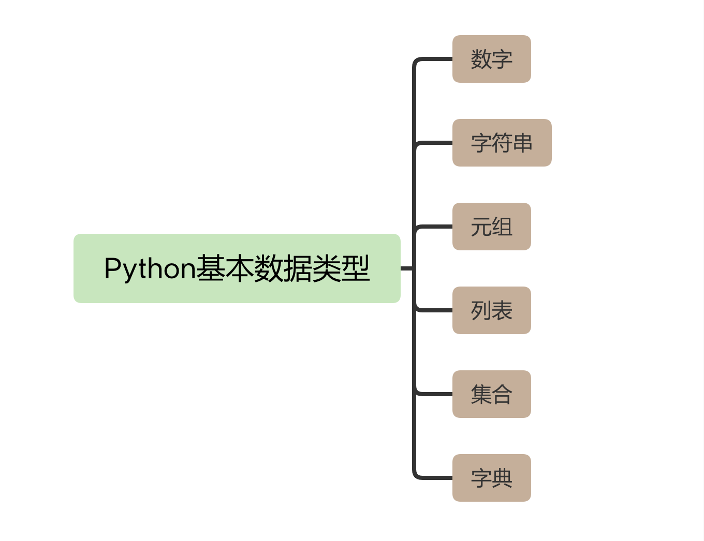

- 00 导读 入门Python的必备知识.md.html
- 00 开篇词 重复工作这么多，怎样才能提高工作效率？.md.html
- 01 拆分与合并：如何快速地批量处理内容相似的Excel？.md.html
- 02 善用Python扩展库：如何批量合并多个文档？.md.html
- 03 图片转文字：如何提高识别准确率？.md.html
- 04 函数与字典：如何实现多次替换.md.html
- 05 图像处理库：如何实现长图拼接？.md.html
- 06 jieba分词：如何基于感情色彩进行单词数量统计？.md.html
- 07 快速读写文件：如何实现跨文件的字数统计？.md.html
- 08 正则表达式：如何提高搜索内容的精确度？.md.html
- 09 扩展搜索：如何快速找到想要的文件？.md.html
- 10 按指定顺序给词语排序，提高查找效率.md.html
- 11 通过程序并行计算，避免CPU资源浪费.md.html
- 12 文本处理函数：三招解决数据对齐问题.md.html
- 13 Excel插件：如何扩展Excel的基本功能？.md.html
- 14 VBA脚本编程：如何扩展Excel，实现文件的批量打印？.md.html
- 15 PowerShell脚本：如何实现文件批量处理的自动化？.md.html
- 16 循环与文件目录管理：如何实现文件的批量重命名？.md.html
- 17 不同操作系统下，如何通过网络同步文件？.md.html
- 18 http库：如何批量下载在线内容，解放鼠标（上）？.md.html
- 19 http库：如何批量下载在线内容，解放鼠标（下）？.md.html
- 20 不同文件混在一起，怎么快速分类？.md.html
- 21 SQLite文本数据库：如何进行数据管理（上）？.md.html
- 22 SQLite文本数据库：如何进行数据管理（下）？.md.html
- 23 怎么用数据透视表更直观地展示汇报成果？.md.html
- 24 条形、饼状、柱状图最适合用在什么场景下？.md.html
- 25 图表库：想要生成动态图表，用Echarts就够了.md.html
- 26 快速提取图片中的色块，模仿一张大师的照片.md.html
- 27 zipfile压缩库：如何给数据压缩&加密备份？.md.html
- 28 Celery库：让计算机定时执行任务，解放人力.md.html
- 29 网络和邮件库：定时收发邮件，减少手动操作.md.html
- 30 怎么快速把任意文件格式转成PDF，并批量加水印？.md.html
- 春节特别放送1 实体水果店转线上销售的数据统计问题.md.html
- 春节特别放送2 用自顶至底的思路解决数据统计问题.md.html
- 春节特别放送3 揭晓项目作业的答案.md.html
- 结束语 和我一起成为10X效率职场人.md.html
- 捐赠
00 导读 入门Python的必备知识
你好，我是尹会生。
咱们这个课程是用Python解决办公低效问题，但是即使你从来没有用过Python，甚至没有任何的编程语言基础，也完全可以学会这门课。
为了解决你的语言问题，我特意准备了这节课。我会给你讲解 Python的五个最基础的语法知识，包括运行环境配置、变量、数据类型、控制语句和使用函数库的方法。
这节课的内容也不需要你马上掌握，其中提到的一些关键知识，我会在后面的课程中详细讲解，包括它们的使用场景和具体用处。学完这节课，你只要能对Python有一个初步的了解，可以看懂基本的Python代码就行了。
当然，如果你有一定的Python语言基础，那么这节课就相当于给你巩固复习了，帮你查漏补缺。
运行环境配置
我们先从Python的运行环境配置开始说起。初学者面对的最大难题，就是如何让自己的Python程序运行起来。
一般情况下，运行的Python代码会被保存到一个以.py作为扩展名的文件中，也就是Python脚本文件。要想让Python程序运行，我们需要打开终端应用程序（在Windows中开始-运行-cmd.exe）：
python3 /py文件所在的路径/xxx.py
或
cd /py文件所在的路径
python3 xxx.py
这段代码中，xxx.py就是我们编写好的Python脚本文件，Python3 是Python脚本文件的解释器，它会把我们编写好的代码翻译给计算机，让计算机去执行。
在运行程序的过程中，有两点需要注意。
第一，Windows和macOS默认是没有安装Python解释器的，所以你需要通过Python官方网站下载不同操作系统下的Python解释器。关于Python的版本，我建议你使用官方建议的最新稳定版本，下载后直接安装就可以使用了。
第二，Python3 解释器需要在字符终端下运行。
以macOS系统为例，你需要打开终端来运行python3 -V 命令来验证Python解释器是否安装成功，如果显示了Python解释器的版本，那说明安装是成功的。如果提示没有找到这个命令，你需要重新安装，并注意安装过程中是否有错误提示信息。
python3 -V # 执行的命令
Python 3.9.1 # 返回的结果
搭建Python的开发环境，是运行一切程序的基础。无论你现在手边电脑操作系统是哪一种，我都建议你马上行动，先按照刚刚讲解的步骤，正确地安装和设置Python开发环境。这样在之后的课程中，你就能马上跟着我的讲解进行操作了。
变量
在正确配置好Python的开发环境之后，咱们继续学习一个重要概念：变量。
变量这个词来源于数学，在编程语言中，变量主要是用来存储计算结果或表示值的抽象概念。
计算机中的变量都有一个名字，我们把它称为变量名。这个名字一般是根据变量的英文名进行人为命名的，一般多用简短且易于记忆的名字。比如，我在课程中会使用src_path、dst_path两个变量表示操作源文件路径和目标文件路径。
我们还可以为变量指定一段数据，这段数据称作变量的值。计算机处理的数据很大一部分来源于用户输入的数据和运算的结果数据，如果这部分数据需要跟踪，我们就可以将数据存储在变量中。
对于初学者来说，变量的概念比较抽象，你可能现在有点蒙。别急，我现在给你举一个简单的例子，你一看就明白了。假如我要在Python当中计算两个数的和，代码如下：
x=100
y=200
z=x+y
print(z)
在上面的代码当中， 我们分别定义了x、y、z三个变量。 x、y、z称作变量名，定义变量名必须要遵从以下四个规则：
- 变量名只能是字母、数字或下划线；
- 变量名的第1个字母不能是数字；
- 变量名也不能是Python的关键字；
- 变量名是区分大小写的。
上述代码中的=和+，称作运算符。
- “=”叫做赋值运算符。它的功能是将右边的表达式赋值给左边的变量。
- “+”叫做算术运算符。进行算术运算时还可以使用-、*、/、%等常用算术运算符号。
代码的最后一行，为了能让你的计算结果在终端上显示，我们需要使用一个叫做print的内置函数。
内置函数是Python内置的一种功能。比如代码中的print就是用来进行输出的。它的最基本用法就是在print函数的括号中写入变量，除了输出最终的结果外，也可以将print函数放在程序运行的过程中，方便你输出更丰富的调试信息。
通过上面的讲解，我为你介绍了变量如何进行赋值和如何输出。其实，在Python中变量用来存储的数据还会区分类，这些类型也有专门的名称，叫做数据类型。
数据类型
Python支持的数据类型有数字、字符串、元组、列表、集合、字典6种，不同的数据类型用于描述不同的类别，比如姓名可以用字符串类型，性别可以用布尔型，身高可以用数字类型。下面的代码，我为你演示一下三种最简单的数据类型：
name = "yin huisheng"
male = True
hight = 180
上面的三个变量，我分别为它赋予了字符串、布尔类型和浮点型这三种数据类型。 Python的变量不需要事先定义变量类型，跟其他语言相比更加简洁。Python可以直接对变量进行赋值，这样就可以根据变量值自动识别变量的类型了。
不过在上面的例子当中，你还需要注意两点。
一方面，如果你使用字符串类型，就必须给字符串增加引号。这是字符串的语法规定，如果不加引号会被识别为其他类型，在进行操作时就会得到不同的结果。
比如说，我定义Python的变量为“123”，加了引号会被识别为字符串，如果一个变量“123”没有加引号，则会被自动识别为数字。如果在Python程序中使用“123+123”会得到两个整数的和“246”，如果是“123”+“123”就会得到两个字符串的连接“123123”。
另一方面，使用布尔类型的时候，True和False首字母必须要大写，它们是Python的关键字，如果首字母没有大写会被当作变量处理，解释器也会报错。True在布尔类型表示真（对），False表示假（错）。比如算式10>5 是正确的，在Python中就会用True来表示结果是真，反之为假。
上面提到的整数、浮点数和布尔型都是属于数字类型。除了这些，Python还支持很多种数据类型，包括数字、字符串、元组、列表、集合、字典等。它们之间的关系，我用下面的思维导图为你进行展示。

我在课程中会逐一为你剖析它们的用处,让你能够全部掌握。当你学会这些类型的时候,可以更精确地描述数据，比如，我想用Python的数据类型存储“5个苹果和10个橘子”，我们就需要使用字典和字符串来表示这些数据。你可以看一下下面这个记录水果数量的例子：
fruits1 = {"apple":5, "orange":10}
fruits2 = "apple,5,orange,10"
我分别用字典和字符串记录了水果的名称和数量，可以看到，字典表达的水果和数量之间的映射关系更明确，而且不同的数据类型还能支持它特有的内置方法。例如上面定义了水果的字典数据类型，我们可以通过 fruits[“apple”] 直接得到苹果的数量5 , 有时候，这些便捷的内置方法也是我们选择数据类型的依据。
数据类型是一门编程语言的必要组成部分，学习编程语言主要就是为了掌握它的数据类型。这节课我只要求你能够了解Python有哪些基本数据类型就可以了，在之后的课程当中，我会为你重点介绍每一种数据类型的优缺点，以及该怎么使用它们。
流程控制
流程控制，就是我们经常说的程序执行的顺序控制。 从上面的几个例子当中，你会发现程序都是从上向下依次执行的。这也是Python语言最简单的结构——顺序结构。在Python中，除了顺序结构之外，还有分支和循环两种结构。
分支结构
分支结构用来判定某个条件是否成立，它会根据一条或多条语句的判定结果（是True还是False）来执行对应操作的语句，从而实现分支的效果。实现分支结构的语句叫做if语句。除了if这个关键词外，我们经常还会用if…else和if…else…if语句来实现更多的分支和更复杂的逻辑。
我们一起看一个比较数值大小的例子吧。
x = 20
if x > 10: # 注意结尾的冒号:
print("if的判断结果为True")
print("x的值大于10")
else:
print("if的判断结果为False")
print("x的值小于10")
print("程序执行结束")
# 执行结果如下
if的判断结果为True
x的值大于10
程序执行结束
在上面这段代码当中，我们实现了判断变量x是否大于10的功能。在书写分支结构时，要注意书写格式问题，分支结构的书写格式比顺序结构要复杂，例如：
- if判断的书写格式，冒号标志着if判断的结束。
- if下方有缩进的代码，是在True的条件下才能运行的。在演示代码中，缩进代码由2行组成，其实，它也可以由很多行代码组成，多行代码的形式被称作代码块。代码块一直到缩进再次改变的时候，True条件下的代码才结束。
需要你注意的是，在整个程序当中，缩进方式必须一致，要么使用Tab、要么使用4个空格进行缩进。Python对于缩进和复合语句结尾的冒号要求非常严格，如果弄错了就会报错。而且，缩进不同会大大影响一个程序的运行结果。例如上面的代码中“print(“程序执行结束”)” 如果有缩进，你就看不到“程序执行结束”这行执行结果了。
循环结构
在程序运行逻辑中，另一个重要的结构叫做循环结构。循环结构是可以多次执行同一段代码的语句结构。在Python当中有两种循环语句，分别是while语句和for语句。
while语句在循环开始前先对条件语句进行判断。如果条件语句的结果为True，则循环一次再次进行判断。如果条件允许的结果为False，则循环结束。这里所指的条件语句和if语句当中的条件是一样的。下面的例子是我使用while语句实现的从1~10的累加。
start = 1
total = 10
sum = 0
while start <= total: # 条件为True 继续执行循环
sum += start
start += 1
print(sum) #条件为False循环结束,输出结果
另一个循环语句叫做for语句，它和while的功能有所不同。我们一般把for的功能称作遍历功能。一般我们会提供一个列表，通过for将列表中的每一个元素读取出来，进行处理。
举个例子，如果我们要依次输出列表中的每一个元素，就可以用下面的代码：
total = list(range(1,11)) # 定义一个1-10 的列表
for i in total:
print(i)
# 输出结果
1
2
3
4
5
6
7
8
9
10
流程控制语句可以改变Python程序的执行顺序，而我们通常会根据实际的业务场景来控制某些语句块进行重复执行的。
使用函数库
Python语言的强大之处，除了语法简单外，就在于它庞大的函数库了。
Python的函数库有标准库和第三方库（也叫扩展库）。标准库是Python自带的，而扩展库是需要再进行安装的库。你可以从Python的官方文档和PyPI网站中找到它们，其中，PyPI网站的库就是扩展库。
PyPI网站上面的项目超过28万个，几乎包含了各个行业和各个功能的应用，实现了很多你日常需要手动操作的功能。
这些库如何是用呢？首先看一下官方自带的库。
如果要使用官方自带的库，可以使用import关键字导入。例如我计算算数平方根功能，就可以使用如下方法：
import math
math.sqrt(16)
import 后面指定要使用的库的名称，使用库的具体功能，通过官方文档来找到相应的函数。例如，算数平方根使用sqrt函数就可以实现你想要的功能了。
标准库的使用非常容易吧，那如何使用扩展库呢？由于扩展库都需要通过网络进行下载，因此我们还需要提前在终端使用pip3命令进行下载和安装。例如我希望Python可以支持Word文件格式, 我就需要在终端执行下面的代码。
pip3 install python-docx
下载和安装之后, 就可以像标准函数库一样使用import导入使用了。
总结
通过上面的内容，我为你简单介绍了一下入门Python需要掌握的五大部分，包括环境配置、变量、数据类型、控制语句和使用函数库的方法。这五个部分是Python最基础也是最必要的语法知识。希望你能通过我的介绍，对Python语言有所了解，消除对编程语言的畏惧心理。
最重要的是，即使今天这节课你没有完全懂，也没有关系。
一方面，我会在之后的课程中不断讲解每个部分的用法和具体使用场景。还是我在开篇词中说的学习方法，你需要在听我讲解的同时，动手操作，反复练习，这些语法知识就不会是太大的问题。
另一方面，我也希望你能在学习之后的课程时，如果遇到哪些关键语法知识不太明白，就回头来学习今天这节课。这节课相当于整个课程的基石，需要反复琢磨、反复学习。
如果你能跟着我的课程不断练习实操，那学完后，你都能够熟练地修改课程中涉及到的代码，并且还能根据自己的工作场景，自行编写提升工作效率的程序。
思考题
最后留一道思考题给你，你以前是如何学习编程语言的呢?有没有好的学习方法分享一下？或者你在学习过程中有遇到什么困难，也可以分享出来。
如果你觉得这节课能帮助你提升办公效率，欢迎点击“请朋友读”，分享给你的朋友或同事。
编辑小提示：专栏的完整代码位置是https://github.com/wilsonyin123/python_productivity，可点击链接下载查看。或者通过网盘链接提取后下载，链接是: https://pan.baidu.com/s/1UvEKDCGnU6yb0a7gHLSE4Q?pwd=5wf1，提取码: 5wf1。
© 2019 - 2023 Liangliang Lee. Powered by gin and hexo-theme-book.